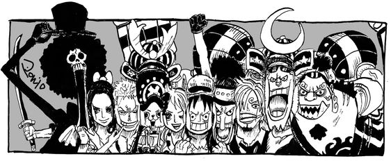
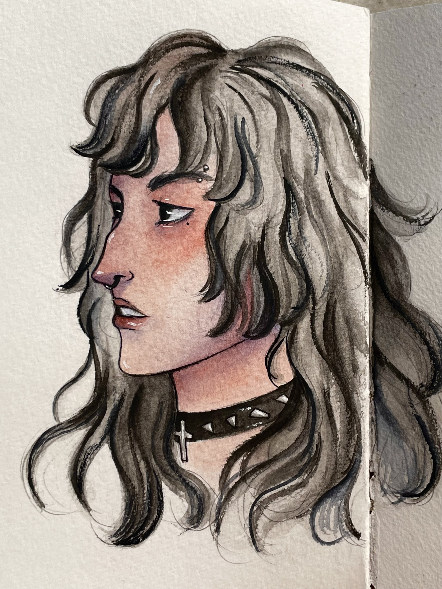
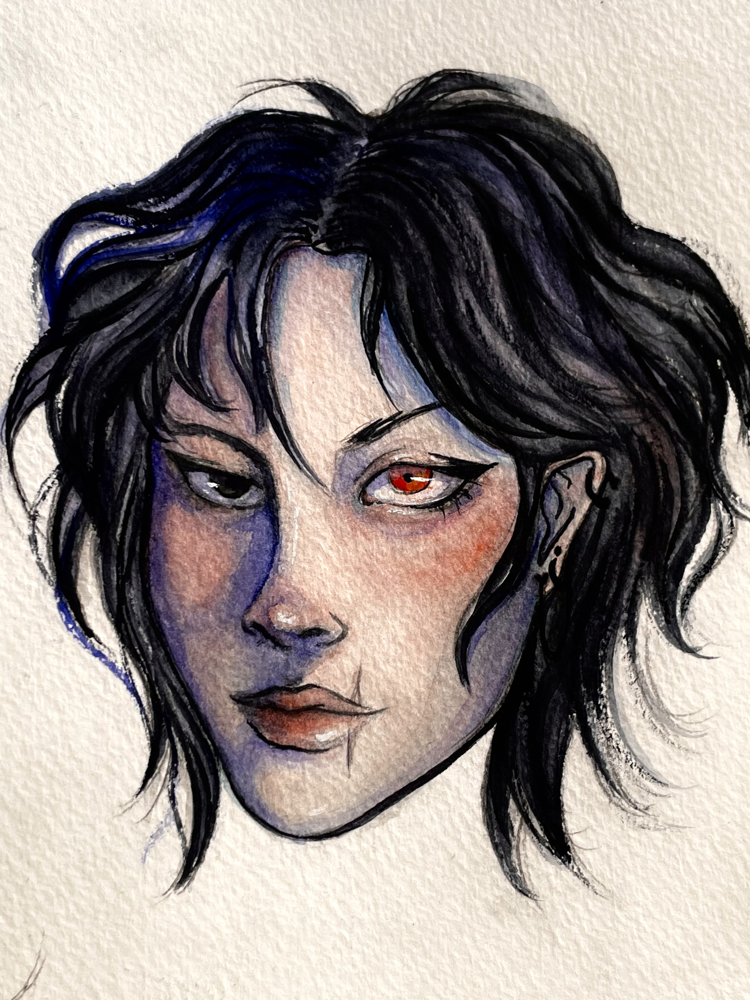

Zeynep Sude Yücesoy
Hakkımda
Merhaba, ben Zeynep Sude Yücesoy. 22 yaşındayım ve Ankara Yıldırım Beyazıt Üniversitesi'nde Yönetim Bilişim Sistemleri bölümü üçüncü sınıf öğrencisiyim.
Geleneksel ve dijital olmak üzere amatör olarak resim yapmakla ilgileniyorum. Sanatla ilgilenmek dışında anime izlemekten çok keyif alıyorum.
Kendimi web geliştirmenin yanı sıra farklı alanlarda da geliştirmek adına patika.dev platformunda eğitimlere katılıyorum.
Şu anki çalışmam da benim Front-end eğitim patikası dahilinde yapmış olduğum bir HTML ödevidir.
Hobilerim

- Hobilerimden biri resim yapmak. Amatör olarak realizmden uzak çizimler yapıyorum. Geleneksel tarzda daha çok sulu boya ve akrilik boyayla çalışıyorum.
Geleneksel tarzın yanı sıra dijital çizimle de ilgileniyorum fakat bu alanda henüz kendimi geleneksel tarzda olduğu kadar geliştirmedim.
- Resmin yanı sıra kilden üç boyutlu çalışmalar da yapıyorum. Buna da yine amatör olarak devam etmekteyim.
- Bir diğer hobim ise anime izlemek :) Genel olarak animasyon izlemekten keyif alsam da anime, yani japon çizgi filmleri bana çok daha ayrı bir keyif veriyor.
Şu an izlemekte olduğum anime olan One Piece favorilerim arasında. Bunun yanı sıra Dororo, Naruto, Monster gibi daha birçok favorim mevcut.
- Son zamanlarda düzenli olarak yoga yapıyorum, bunu da hobilerim arasında sayabilirim.
- Manga, yani japon çizgi romanı okumaktan da hoşlanırım.
Sevdiğim Filmler
Sevdiğim Diziler
Sevdiğim Kitaplar
Bazı Çalışmalarım


İki sulu boya eskizim görsellerdeki gibidir.
Tıklayarak patika.dev'e ulaşabilirsiniz.